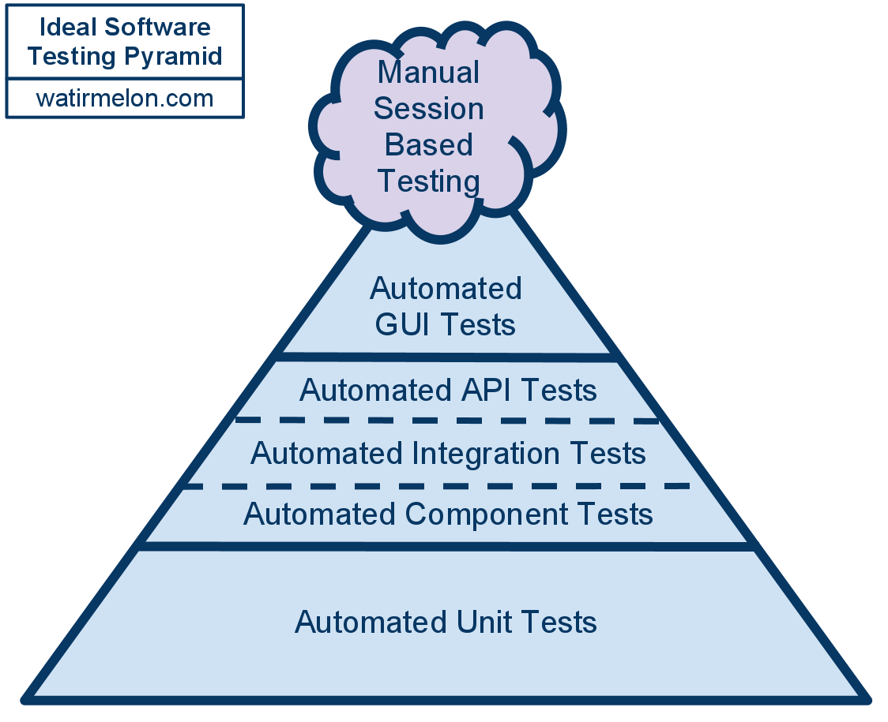

Ember Best Practices
Testing
Reach Out!
EmberJS Purecloud Group

Types of Tests in Ember
Unit Tests
Component Integration Tests
Acceptnace Tests
The Ideal
The Ideal for Web Directory
Unit Tests
Run Loop?
Ember uses its run loop (backburner) to schedule work async, so that the browser doesn't hang up
https://guides.emberjs.com/v2.7.0/applications/run-loop/ http://stackoverflow.com/questions/13597869/what-is-ember-runloop-and-how-does-it-workfunctions that are async need to be wrapped in an Ember.run
Common case is the set function
Container?
The container is the magic ember uses to make its convention over config happen
https://guides.emberjs.com/v2.7.0/applications/dependency-injection/Mind your needs! - all collaborators need to be needed
Fakes
Stubs - hard coded return values
Spies - call the real impls, but can assert on how
Mocks - Can set up return values and assert on how
Implementing Fakes
These are easy to code yourself for simple cases
For advanced usage take a look at ember sinon
https://github.com/csantero/ember-sinonUse moduleForModel To test Ember Data Logic
Gives you access to the store object via "this.store"
Great for testing computeds and integration of serializer/adapter customization
Stubbing HTTP Responses
Mockjax https://github.com/jakerella/jquery-mockjax
overrides jquery ajax
Pretender https://github.com/pretenderjs/pretender
overrides XMLHTTPRequest
Prefer Pretender
Model Test with HTTP Stubbing
import { test, moduleForModel } from 'ember-qunit';
moduleForModel('chat-search-result', 'Unit | Model | Chat Search Result', {
needs: [
'model:chat-search-result',
'adapter:chat-search-result',
'component:emoji-dom',
'serializer:chat-search-result',
'service:application',
'service:intl',
'service:ajax',
'service:preferences',
'service:session',
'service:chat'
]
});
const sampleResults = {
count: 2,
limit: 10,
offset: 10,
ms: 10000,
ts: 10000,
entities: [
{
id: '1',
chat: 'aaaa',
body: 'hello',
createdDate: '99999',
from: {
jid: 'abcd',
name: 'larry'
},
to: {
jid: 'xyz',
name: 'moe'
}
}, {
id: '2',
chat: 'bbbbb',
body: 'world',
createdDate: '1111111',
from: {
jid: 'xyz',
name: 'moe'
},
to: {
jid: 'abcd',
name: 'larry'
}
}
]
};
test('it should populate model with search results', function (assert) {
$.mockjax({
url: '/platform/api/v1/search/chats/',
content: 'application/json',
status: 200,
responseText: sampleResults,
type: 'POST'
});
const resultPromise = this.store().query('chat-search-result', {
query: '*',
targetJids: ['roomJid']
});
return resultPromise.then((results) => {
const searchResults = results.get('content').mapBy('record');
assert.equal(searchResults[0].get('body'), sampleResults.entities[0].body, 'should retrieve body for first chat');
assert.equal(searchResults[1].get('body'), sampleResults.entities[1].body, 'should retrieve body for second chat');
return assert.equal(searchResults[0].get('from.name'), sampleResults.entities[0].from.name, 'should retrieve from name for first chat');
});
});
Unit testing everything else
use "moduleFor" to test ember objects
- Services
- Helpers
- Routes
- Utils
Service Unit Test
import { moduleFor, test } from 'ember-qunit';
import Ember from 'ember';
const DUMMY_ELEMENT = {};
let MapUtilStub = Ember.Object.extend({
createMap(element, location) {
this.assert.ok(element, 'createMap called with element');
this.assert.ok(location, 'createMap called with location');
return DUMMY_ELEMENT;
}
});
moduleFor('service:maps', 'Unit | Service | maps', {
needs: ['util:google-maps']
});
test('should create a new map if one isnt cached for location', function (assert) {
assert.expect(4);
let stubMapUtil = MapUtilStub.create({ assert });
let mapService = this.subject({ mapUtil: stubMapUtil });
let element = mapService.getMapElement('San Francisco');
assert.ok(element, 'element exists');
assert.equal(element.className, 'map', 'element has class name of map');
});
test('should use existing map if one is cached for location', function (assert) {
assert.expect(1);
let stubCachedMaps = Ember.Object.create({
sanFrancisco: DUMMY_ELEMENT
});
let mapService = this.subject({ cachedMaps: stubCachedMaps });
let element = mapService.getMapElement('San Francisco');
assert.equal(element, DUMMY_ELEMENT, 'element fetched from cache');
});
Testing Asynchronously
When the test depends on the completion RSVP Promise, return the Promise and the test will wait for it
When you need to wait on a callback use assert.async
Component Integration Tests
What you don't get
Access to the component instance
Asserts are mostly run against the DOM
Providing data and actions
import { moduleForComponent, test } from 'ember-qunit';
import hbs from 'htmlbars-inline-precompile';
import RSVP from 'rsvp';
import wait from 'ember-test-helpers/wait';
moduleForComponent('list-filter', 'Integration | Component | list filter', {
integration: true
});
const ITEMS = [{city: 'San Francisco'},
{city: 'Portland'},
{city: 'Seattle'}];
test('should initially load all listings', function (assert) {
assert.expect(3);
this.on('filterByCity', (val) => {
assert.equal(val, '');
return RSVP.resolve(ITEMS);
});
this.render(hbs`
{{#list-filter filter=(action 'filterByCity') as |rentals|}}
{{#each rentals as |item|}}
-
{{item.city}}
{{/each}}
{{/list-filter}}
`);
return wait().then(() => {
assert.equal(this.$('.city').length, 3);
assert.equal(this.$('.city').first().text().trim(), 'San Francisco');
});
});
Stubbing Services
import { moduleForComponent, test } from 'ember-qunit';
import hbs from 'htmlbars-inline-precompile';
import Ember from 'ember';
let StubMapsService = Ember.Service.extend({
getMapElement(location) {
this.set('calledWithLocation', location);
return document.createElement('div');
}
});
moduleForComponent('location-map', 'Integration | Component | location map', {
integration: true,
beforeEach() {
this.register('service:maps', StubMapsService);
this.inject.service('maps', { as: 'mapsService' });
}
});
test('should append map element to container element', function(assert) {
this.set('myLocation', 'New York');
this.render(hbs`{{location-map location=myLocation}}`);
assert.equal(this.$('.map-container').children().length, 1, 'container should have one child');
assert.equal(this.get('mapsService.calledWithLocation'), 'New York', 'should call service with New York');
});
Acceptance Tests
Custom Helpers!
ember g test-helper name
Fake the Server with Mirage
Uses pretender under the covers
maintains a complete server/orm on the client
Sample Acceptance Suite
import { test } from 'qunit';
import moduleForAcceptance from 'super-rentals/tests/helpers/module-for-acceptance';
import Ember from 'ember';
let StubMapsService = Ember.Service.extend({
getMapElement() {
return document.createElement('div');
}
});
moduleForAcceptance('Acceptance | list rentals', {
beforeEach() {
this.application.register('service:mockMaps', StubMapsService);
this.application.inject('component:location-map', 'maps', 'service:mockMaps');
}
});
test('should redirect to rentals route', function (assert) {
visit('/');
andThen(function() {
assert.equal(currentURL(), '/rentals', 'should redirect automatically');
});
});
test('should link to about page', function (assert) {
visit('/');
click('a:contains("About")');
andThen(function () {
assert.equal(currentURL(), '/about', 'should navigate to about');
});
});
test('should link to contacts page', function (assert) {
visit('/');
click('a:contains("Contact")');
andThen(function () {
assert.equal(currentURL(), '/contact', 'should navigate to contact');
});
});
test('should initially list 3 rentals', function (assert) {
visit('/');
andThen(function () {
assert.equal(find('.results .listing').length, 3, 'should display 3 listings');
});
});
test('should list 1 rental when filtering by Seattle', function (assert) {
visit('/');
fillIn('.list-filter input', 'seattle');
keyEvent('.list-filter input', 'keyup', 69);
andThen(function () {
assert.equal(find('.results .listing').length, 1, 'should display 1 listing');
assert.equal(find('.listing .location:contains("Seattle")').length, 1, 'should contain 1 listing with location Seattle');
});
});
test('should show details for a specific rental', function (assert) {
visit('/rentals');
click('a:contains("Grand Old Mansion")');
andThen(function() {
assert.equal(currentURL(), '/rentals/grand-old-mansion', "should navigate to show route");
assert.equal(find('.show-listing h2').text(), "Grand Old Mansion", 'should list rental title');
assert.equal(find('.description').length, 1, 'should list a description of the property');
});
});
Acceptance Testing is a WIP for Web Directory
Setting up Mirage for HTTP Faking
Faking Authentication
Cleaning up between tests
web sockets?
Debugging
Stack Traces on Chrome or in console
Setting async stacks on dev tools
set on destroyed object(not tearing something down)
run loop (wrap in run)
Missing needs
pauseTest to freeze execution to play with screen on browser
debugger to set breakpoint at line
Avoiding Brittle Tests
- Test Outcomes, not Internals
- Use Pure Functions Where You Can
- Keep Collaborators to a Minimum
- Law of Demeter
- Don't Test the Framework, Its already Tested
Workflow Tips
- Make a list of test skeletons as a todo list
- Tests are much harder to write after the fact
- write them early to avoid the feeling of reverse engineering your code